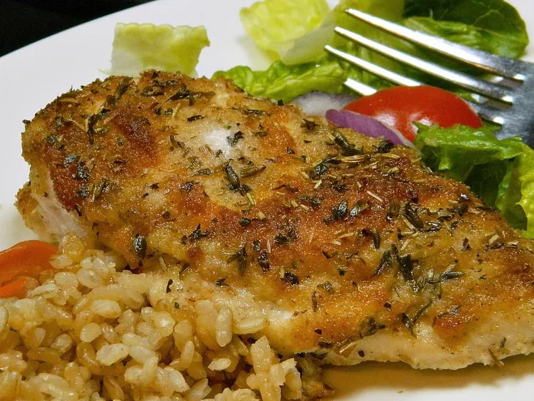

PARMESAN AND BREAD CRUMBS

This chicken breast recipe with mayonnaise, Parmesan cheese, bread crumbs, and
herbs is a true tried-and-tested recipe! I remember seeing an ad on TV
about cooking with mayonnaise and decided to give it a shot. I've made it
with just the mayonnaise on top and it really locks the moisture into the
chicken. The bread crumbs and cheese are a must for me; they complement each
other very well.
INGREDIENTS
- 2 skinless, boneless chicken breasts
- 2 ½ tablespoons grated Parmesan cheese
- 2 tablespoons mayonnaise, or more to taste
- 2 tablespoons bread crumbs, or more to taste
- 1 ½ teaspoons herbes de Provence
DIRECTIONS
Preheat the oven to 425 degrees F (220 degrees C). Place chicken
breasts in a baking pan.
Mix Parmesan cheese and mayonnaise together in a bowl until well combined;
spread evenly over chicken breasts. Coat with bread crumbs and sprinkle
with herbes de Provence.
Bake in the preheated oven until chicken breasts are no longer pink in
the center and the juices run clear, 20 to 25 minutes. An instant-read
thermometer inserted into the center should read at least 165 degrees F
(74 degrees C).
:max_bytes(150000):strip_icc():format(webp)/chocolate-thumbprint-cookies-ddmfs-1027-4x3-1-dbc3f8c0c7e54c84b0674baa9fd16c1f.jpg)